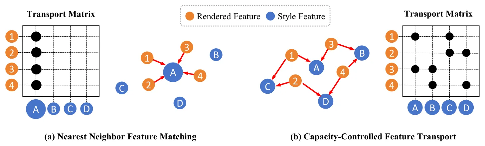
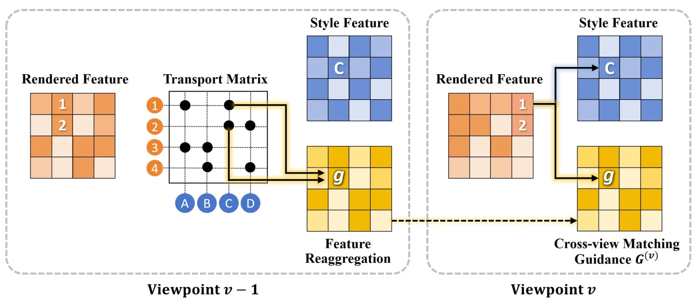

3D Gaussian Splatting 的容量受控多视角风格化Capacity-Controlled Multi-View Stylization of 3D Gaussian Splatting
偏图形学/风格化，不是定位建图主线；但其跨视角一致性约束与几何正则可能对真实 3DGS 重建质量优化有间接启发。
一句话工作总结
用带列容量约束的最优传输和跨视角匹配指导，提升 3DGS 风格化的稳定性与多视角一致性。
摘要
3DGS 适合高效新视角合成，但多视角风格化时常出现跨视角风格不一致、局部风格分配不稳定和 many-to-one feature reuse。本文把局部风格匹配重新表述为半平衡最优传输问题，并引入可调强度的显式列容量约束，以控制风格特征分配、提升覆盖和多样性。方法还加入跨视角匹配指导，约束场景内容与风格模式在不同视角中的对应关系，并为 vanilla 3DGS 设计多个几何正则，使 Gaussian primitives 更适合表示细粒度纹理。实验显示该方法改善多视角风格一致性，同时保持场景语义结构。
While 3D Gaussian Splatting (3DGS) provides an efficient and explicit representation for novel view synthesis, enforcing stylistic coherence across viewpoints remains challenging. Existing 3D stylization methods typically apply 2D feature-matching losses independently per rendered view, which leads to unstable style allocation, many-to-one feature reuse, and limited cross-view consistency. We propose a capacity-controlled framework for multi-view stylization of 3DGS, grounded in optimal transport. Specifically, we reformulate local style matching as a semi-balanced optimal transport problem. By introducing explicit column-capacity constraints with tunable strength, our formulation mitigates many-to-one matching and enables controllable allocation of style features. This transport-based objective provides a principled mechanism for balancing feature coverage and stylistic diversity while maintaining stable correspondences across viewpoints. To further enhance cross-view coherence, we incorporate a novel cross-view matching guidance to constrain correspondences between scene content and style patterns. In addition, we introduce several geometric regularizations to enhance the vanilla 3DGS, thereby enabling optimized Gaussian primitives to represent finer-grained textures during stylization. Extensive experiments demonstrate that our approach significantly improves multi-view stylistic consistency and produces stable, expressive 3D stylizations while preserving the core semantic structure of the scene.
中文解读摘录
- 英文题名：SatSplatDiff: Geometry-preserving generative refinement for high-fidelity satellite Gaussian Splatting
- 作者：Jiyong Kim, Shuang Song, Ronjgun Qin
- 类别/来源：cs.CV；23 pages, 15 figures；采集 score=10；阅读优先级=8.2/10。
- 一句话总结：在 SatSplat 的摄影测量 DSM 初始化与 2DGS 阴影建模基础上，加入深度监督、多尺度几何细化和 shadow-guided generative refinement，试图提升卫星 3DGS 外观质量同时抑制扩散式细化带来的几何幻觉。
- 为什么值得看：卫星/航测场景的视角通常集中在顶部，建筑立面监督不足，3DGS 容易出现洞、立面不稳定和跨 tile 不一致。本文强调“生成式增强不能破坏几何一致性”，用几何计算阴影图约束监督图像更新；摘要报告 IARPA2016/DFC2019 上几何 MAE 最高降低 18%、FID-CLIP 改善 28–45%、可达 5x 分辨率增强，并给出源码
https://github.com/GDAOSU/SatSplatDiff。建议重点复核代码完整度、DSM/阴影先验依赖、跨 tile 泛化和是否存在外观 hallucination。 - 标签：卫星三维重建、3DGS、生成式细化、几何一致性
- 链接：abs / PDF
图表/页面预览

{kind=link}

{kind=link}
